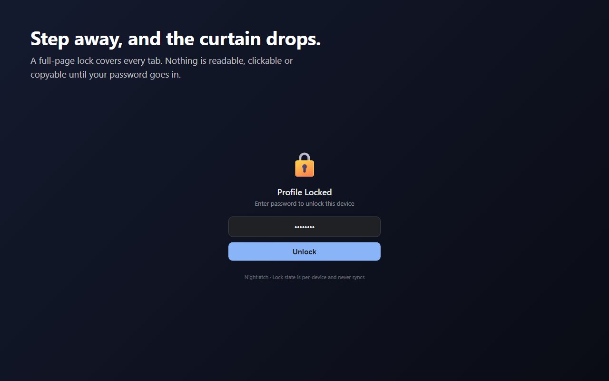
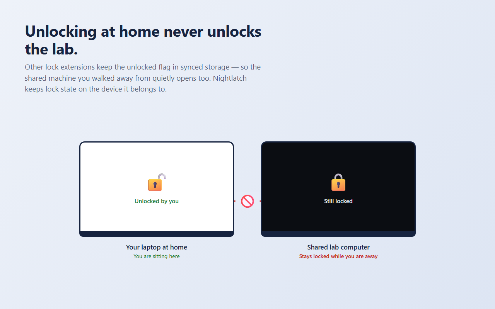
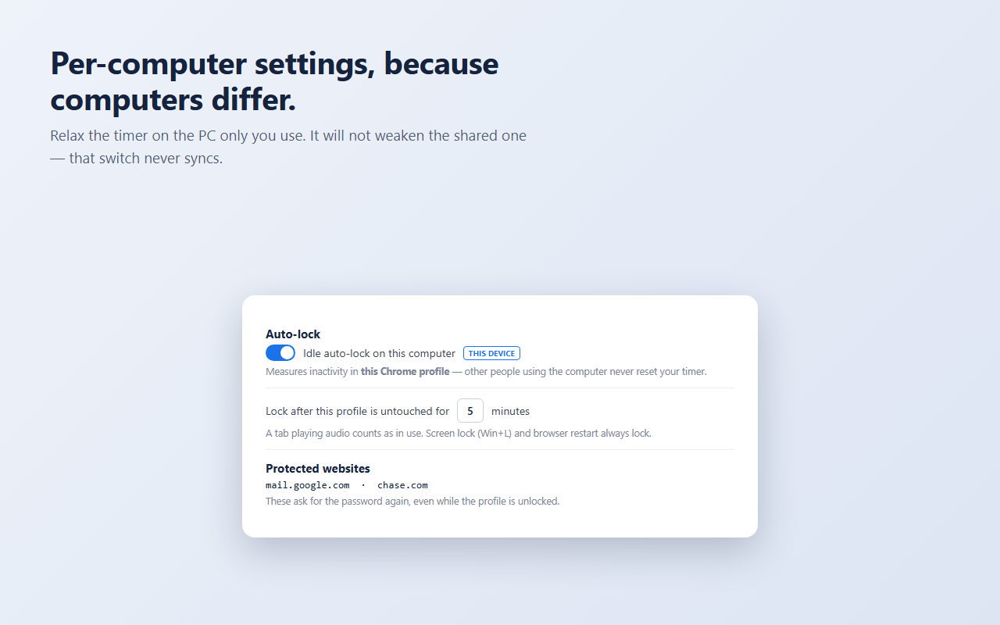
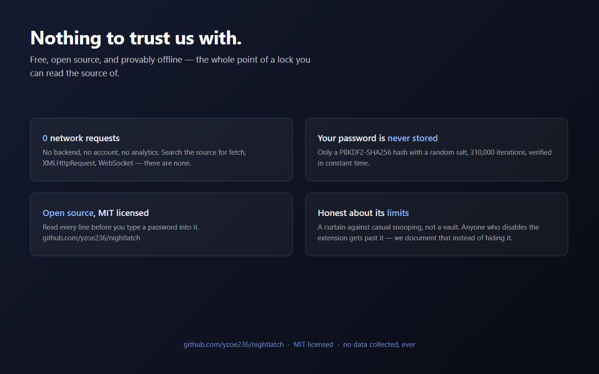

这一步保护你的隐私，别跳过。
Items → + New item，上传：
D:\dev\nightlatch\dist\nightlatch-store.zip
解析后会自动读出名称 Nightlatch — Profile Lock for Google Chrome™，正常。
Password-lock your browser profile on shared computers. The lock never syncs, so unlocking at home leaves the shared PC locked.
Nightlatch puts a password on your browser profile — and, unlike other lock extensions, it keeps the lock where it belongs: on the computer you locked. WHY THIS EXISTS If you use a shared computer — a lab machine, an office workstation, a front-desk PC, a family desktop — you are one unattended moment away from someone reading your mail, your history, your saved sessions and everything else your signed-in profile can reach. Locking the whole operating system is the right answer, and everyone forgets. So people install a browser lock. But several of them keep the "unlocked" flag in synced storage, which follows your Google Account across machines. The result is a quiet failure exactly where it hurts: You lock the shared lab computer and go home. At home you unlock your own browser — and the lab machine unlocks itself too, while you are nowhere near it. Nightlatch was built to fix that specific bug. Lock state lives in per-session, per-device storage that is never replicated. Your password and preferences sync so you set them once; the lock itself never travels. WHAT IT DOES • Full-page lock screen. Drawn before the page paints, so nothing flashes into view. It traps focus and swallows clicks, keystrokes, scrolling and copying until the password goes in. • Idle auto-lock that measures the right thing. The timer counts inactivity in YOUR Chrome profile, not system-wide idle. On a shared machine, someone else working under their own profile keeps the computer busy — but it will not keep your profile unlocked. A tab playing audio counts as in use, so a video call is never interrupted. • Locks on OS screen lock (Win+L) and on every browser restart. Restarting always returns to locked. • Per-computer switch. Turn idle auto-lock off on a machine only you use. That switch does not sync, so relaxing your home PC never weakens the shared one. • Strict mode. While locked, Settings, History, Downloads, Bookmarks, the Password Manager and the New Tab page redirect to the lock screen — pages an overlay cannot cover. • Protected websites. List hostnames such as your bank or webmail; they ask for the password again once per browser run, even while the profile is unlocked. • Failed-attempt report. When you unlock, it tells you how many wrong passwords were tried while you were away. • Brute-force cooldown: four attempts, then a delay that starts at 30 seconds and doubles to a five-minute cap. • Manual lock any time with Ctrl+Shift+L or the toolbar button. Four lock-screen themes. PRIVACY No account. No telemetry. No server. Zero network requests — search the source for fetch, XMLHttpRequest or WebSocket and you will find none. Your password is never stored; only a salted PBKDF2-SHA256 hash with 310,000 iterations. Broad site access is requested for exactly one reason: the lock screen has to be able to cover whatever page is open. HONEST ABOUT WHAT IT IS NOT This is a curtain against casual snooping, not a vault. Anyone who opens chrome://extensions and turns the extension off gets past it — that is true of every extension in this category, and Nightlatch deliberately leaves that page reachable so you can never lock yourself out permanently. Someone with access to the same operating-system account can also read the browser profile straight off the disk; no extension can prevent that. On a shared computer the real baseline is locking the OS (Win+L) or giving each person their own OS account. Nightlatch is the second curtain, for the many times you forget. FREE AND OPEN SOURCE Every feature is free. There is no paid tier and nothing is held back. The complete source is published under the MIT licence at https://github.com/yzoe236/nightlatch — please read it before you type a password into it. That is the point of an open lock. --- Google Chrome is a trademark of Google LLC. Use of this trademark is subject to Google Permissions. Nightlatch is an independent project and is not affiliated with or endorsed by Google LLC.
Privacy & Security
D:\dev\nightlatch\icons\icon128.png
D:\dev\nightlatch\store\




Lock the user's Chrome profile behind a password on shared computers, and keep that lock state confined to the device it was set on.
Stores the salted password hash, the user's preferences, and the per-device lock state. All of it stays in Chrome's extension storage; none of it is transmitted.
Used only to detect that the operating system screen has been locked (Win+L), which must immediately lock the profile. System-wide idle state is intentionally not used.
The lock overlay must be applied to every open tab at once, and while locked the extension redirects browser pages that a content script cannot cover (Settings, History, Downloads, Bookmarks, Password Manager, New Tab) to its own lock page. Only tab IDs and URLs are inspected for this; nothing is stored or sent.
Injects the lock overlay into tabs that were already open when the extension was installed, enabled, or updated — those tabs have no content script yet and would otherwise stay uncovered.
Runs a one-minute timer that checks whether this profile has been idle long enough to auto-lock. Service workers cannot hold a long-lived timer without it.
The lock screen must be able to cover whatever page the user happens to have open, on any site. The content script only paints an overlay and blocks input events; it never reads, stores or transmits page content, and the extension makes no network requests at all.
https://yzoe236.github.io/nightlatch/privacy.html
Visibility → Unlisted（不公开列出） → Submit for review
通过后把商店链接发我，我替换 README 和安装文档里的占位链接。
被驳回也发我——若是名称问题，用备用标题 Nightlatch — Profile Lock for Shared Computers 改完重交即可，其他都不用动。